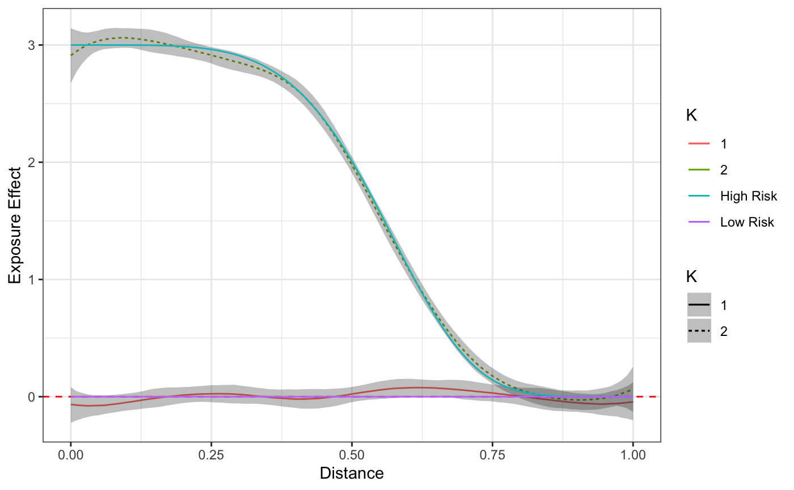

Motivation
The rstap and rsstap packages introduced Spatial Temporal Aggregated Predictor (STAP) models for estimating the effect of spatio-temporal exposure to nearby Built Environment Features (BEFs) on human health. The effects estimated in those models were homogenous; It was assumed in the model formulation that all individuals have the same effect of living near a BEF.The rstapDP package removes this assumption by allowing for heterogeneity in the STAP effect across the population.
Illustrative Example
For example, consider a sample of individuals \((i=1,...,n)\) near Fast Food Restaurants (FFRs) where half of the subjets are at “high risk”of having an average increase in their BMI as a consequence of living near the FFR. In contrast the other half of the population are “low risk” as they experience no increase in BMI. Identifying these effects without knowing these individuals’ risk status, or the number of risk populations requires the estimation of some number of STAP effects \(f_i(\mathcal{D}_i)\) where \(f(\cdot)\) is the (say) spatial exposure function relating how the average health outcome \(BMI_i\) increases as a function of where a new FFR is placed relative to the subjects.
The STAP-DP model which rstapDP incorporates these ideas in a regression setting as follows assuming covariate informatino \(Z_i\) (e.g. sex and/or an intercept term) is also available:
\[ E[BMI_i] = \mathbf{Z}_i^{T} \mathbf{\delta} + f_i(\mathcal{D}_i) \quad i = 1,...,n. \]
Above, \(f_i(\mathcal{D})\), the smooth function of BEF exposure is modeled through spline regression coefficients, \(\mathbf{\beta}_i\) similar to the rsstap package. In the rstapDP package, we place a Dirichlet Process (DP) prior on these regression coefficients:
\[ f_i(\mathcal{D}_i) = \sum_{j=0}^{J}\sum_{d \in \mathcal{D}_i} \beta_{i,j}\phi_j(d)\\ (\mathbf{\beta}_i,\mathbf{\tau}_i) \sim DP(\alpha,G_0)\\ G_0 \equiv MVN(0,\mathbf{I}\sigma^{-2} \mathbf{\tau}_i)\times \text{Gamma}(a_{\tau},b_{\tau})\\ \alpha \sim \text{Gamma}(a_{\alpha},b_{\alpha}). \]
By placing a DP prior on the \(\mathbf{\beta}\) coefficients, heterogenous effects clustering is induced, allowing for the estimation of the aforementioned high/low risk spatial exposure effects.
In the following sections, this idea will be briefly illustrated using the simple simulated example. For more information, check out the rstapDP documentation.
Exploratory Data Analysis
We’ll begin by loading the appropriate libaries.
library(rbenvo) library(rstapDP) library(dplyr) library(ggplot2) theme_set(theme_bw()) data("FFR_benvo")
For this simple illustrative example, we’ll use the data FFR_benvo (see here for more information on benvos) which comes with the rstapDP package. This data is simulated in the manner previously described: with one high risk group that experiences an increase in the pseudo-BMI measure as a function of nearby FFRs, and one group that does not. There is also a binary sex covariate simulated. We can get a brief description of the FFR data by calling the print and summary functions of the FFR_benvo object.
FFR_benvo #> Subject Data: #> ---------------------------: #> Observations: 1000 #> Columns: 3 #> #> BEF Data: #> ---------------------------: #> Number of Features: 1 #> Features: #> Name Measures #> 1 FFR Distance
bef_summary(FFR_benvo) #> # A tibble: 1 x 7 #> # Groups: BEF [1] #> BEF Distance_Time Lower Median Upper Number Num_NA #> <chr> <chr> <dbl> <dbl> <dbl> <int> <int> #> 1 FFR Distance 0.0278 0.504 0.975 9501 0
Model Fitting and Results
The following syntax shows how to fit the STAP-DP model. The rstapDPpackage fits the above model using a truncated DP Gibbs Sampler via Rcpp. We’ll use the default prior recommendations for the DP base measure and prior precision, drawing 5000 samples with the first 3000 used for burn in. Note that more/fewer iterations may be required depending on the complexity or size of the data.
fit <- fdp_staplm(BMI ~ sex + sap(FFR), benvo = FFR_benvo, K = 5, ## for speed iter_max = 3E3, burn_in = 2E3, thin = 1, seed = 43431)
With our model fitting complete, our first check will be to look the posterior predictive checks via the ppc function.
ppc(fit)
An additional graphical check that can be used to identify clustering patterns is the pairwise probability matrix as described in (Rodriguez 2012, 1136)
plot_pairs(fit,sample=500,sort=TRUE) #> Warning: The `x` argument of `as_tibble.matrix()` must have unique column names if `.name_repair` is omitted as of tibble 2.0.0. #> Using compatibility `.name_repair`. #> This warning is displayed once every 8 hours. #> Call `lifecycle::last_warnings()` to see where this warning was generated.

Finally, we’ll take at look at the estimated and true exposure curves.
plot(fit) + truth

The curves themselves, including the distance at which the exposure effect becomes negligible, in addition to the proportion with which individuals are assigned to these curves are the typical primary objectives for those interested in this model. However, we empahsize the importance of using the posterior predictive checks and diagnostics prior to reading too much into any curve or parameter estimates.
References
Rodriguez, Abel. 2012. “Nested Dirichlet Process.” Journal of the American Statistical Association 103 (483): 1131–54. https://doi.org/10.1198/016214508000000553.